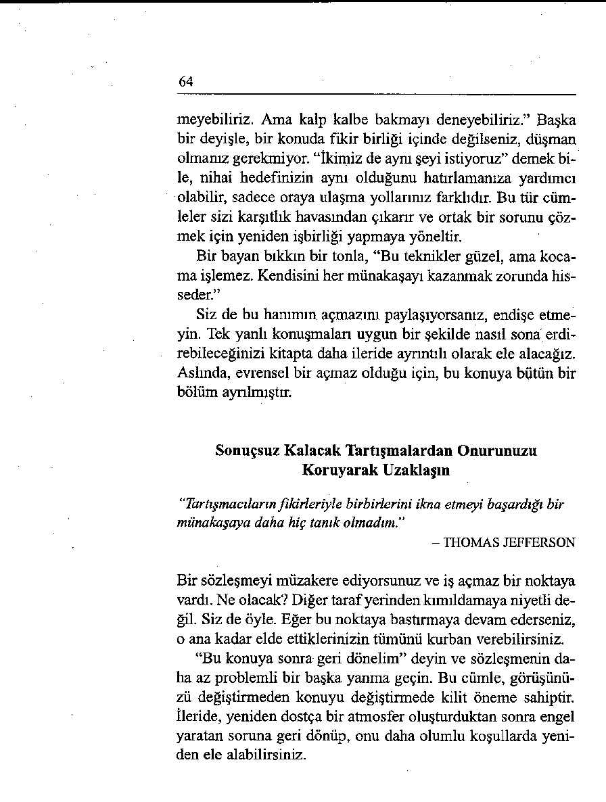
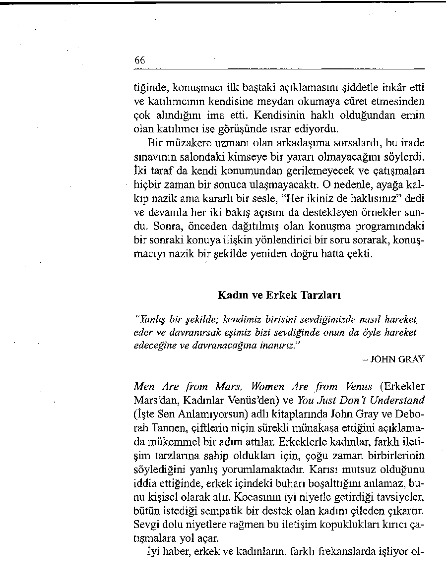
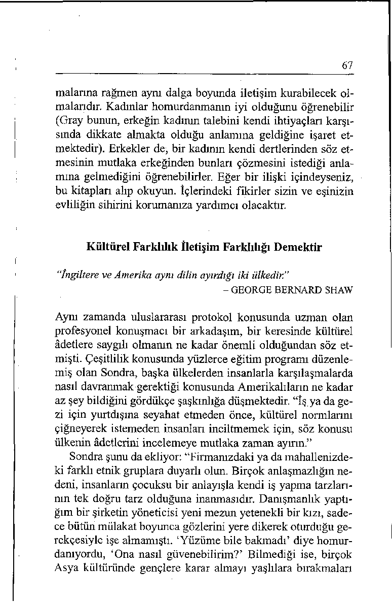
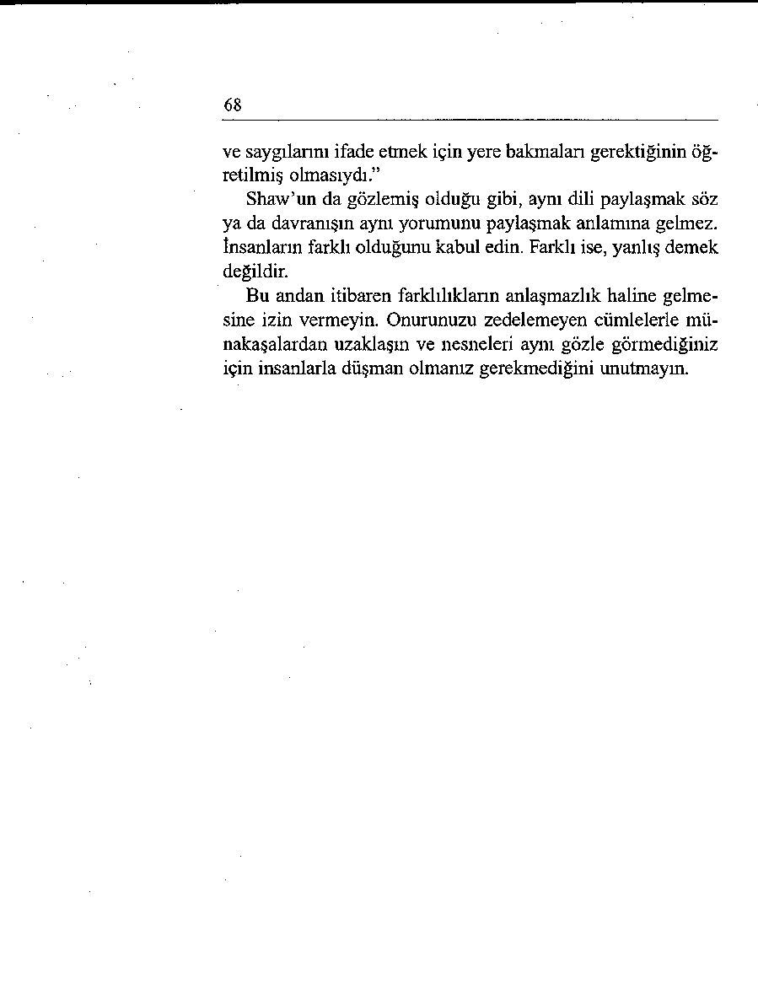
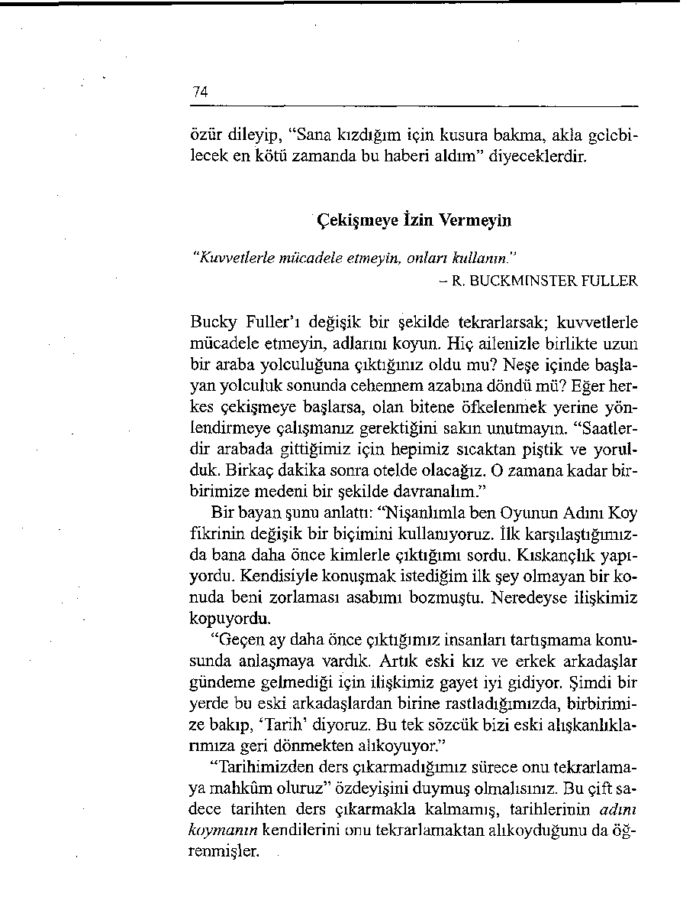

“Kapalı bir ağız yekûn biriktirmez.”
-TONGUE FU DÜŞÜNCESİ
Örneğin, “Karını dövmekten ne zaman vazgeçtin?” türünden
açık saldırılara hiçbir zaman itibar edip yanıt vermeyin. Ni çin? Bunu en iyi Bob Monkhouse açıklamıştır: “Süküt sadece
altın olmakla kalmaz, aynı zamanda nadiren yanlış yorumlanabilir.” Hatta, “Buna bir cevap vermeyeceğim” bile demeyin.
Zokayı bir kez yutarsanız, sizi hemen iğneli sözlerin oltasında
sallandmverirler.
Bunun yerine imayı bağlantılı başka bir konuya yönlendirin. Ünlü bir film yıldızı televizyondaki bir gece yarısı sohbetinde bunun harika bir örneğini vermişti. Ev sahibi sunucu yıldızın film kariyeri hakkında son derece yersiz bir imada bulunmuştu. “Bütün filmlerinizde hep bir taşbebek olarak göründünüz, öyle değil mi?”
'Bütün sanat yaşamını bir çırpıda süpürüp atan bu nitelendirmenin artisti son derece üzdüğü açıktı, ama kendisi on beş
dakikayı bu kalıp üzerinde tartışarak ziyan etmeye hiç de niyetli değildi. Filmlerde oynadığı rollere ilişkin değerlendirmesini tartışmak (ve böylece daha da pekiştirmek) yerine, hafif çe sunucuya dönerek açık bir ifadeyle, “Söz filmlere gelmişken, son filmimden bir parça görmeyi arzu eder miydiniz?”
diye sordu. Ev sahibinin rezil olmasına yol açmadan, getirdiği
yorumun bir kısmını doğrudan alıp çok daha yapıcı bir konuya atlayıvermişti.
40
Hayata Gülmeyi Öğrenin
"İnsanları güldürdüğümde benden hoşlandıklarının çok çabuk
farkına vardım. Bu dersi hiçbir zaman unutmayacağım.”
- ART BUCHWALD
Kuzey KaliforniyalI profesyonel bir konuşmacı olan dostum
Jim Pelley nükteli dövüş sanatında kara kuşak sahibidir. Bütün
ülkeyi dolaşarak Fortune 500 şirketlerinde işyerinde mizah konusunda programlar düzenler ve Laughter Works adlı mizahi ve bilgilendirici dergisinin abonelerine düşündürücü katkılar sunar. Hayata gülerek yaklaşan ve başkalarına da böyle yapmada yardımcı olan bir kabin görevlisine ilişkin öyküsünü herkese anlatmam için, Jim iznini benden esirgemedi.
Kıyıdan kıyıya uzun bir uçak yolculuğunda Jim’in yanında
Özgün Zor İnsan oturmaktadır. Bu mutsuz yol arkadaşı her
şeyden şikâyet etmektedir. Çantası yukarıdaki rafa sığmamaktadır. Orta sıranın orta koltuğuna sıkışıp kalmıştır. Yemeğin gelmesi iki saat sürmüştür. Üstelik verdikleri de sıcak yemek değil soğuk sandviçlerdir. Bay Zorluk sandviçinden bir diş aldıktan sonra tepsinin üstüne atıp çağırma düğmesine basar.
Kabin görevlisi bayan hemen belirip kibarca sorar: “Evet
bayım, size nasıl yardımcı olabilirim?” Adam sandviçi görevlinin yüzüne doğru uzatarak, “Bu çok kötü bir sandviç” diye homurdanır.
Kabin görevlisi bakışlarım adamdan sandviçe doğru çevirir.
Sonra gene adama ve tekrar sandviçe bakar.
Dönüp bir kere daha adama bakar, sonra parmağım sandvi çe doğru sallayarak yüksek sesle azarlar, “Kötü sandviç, kötü
sandviç!”
Adam birden silkinerek koltuğunda dikilir. Jim kendisini
tutamayıp kahkaya boğulmuştur. Kısa bir sessizlik anından
sonra, canı oldukça sıkılmış olan yolcu da gülmeye başlar. O
41
dakikadan sonra sessizliğini muhafaza eder ve işbirliği yapmaya başlar.
Jim daha sonra uçağın mutfak bölümüne giderek kabin görevlisini tebrik eder. “Harika bir yanıt verdiniz. Bunu önceden mi düşünmüştünüz?” Kadın şöyle cevap verir: “Yirmi beş yıldır uçuyorum. Uzun süre önce zor insanlarla başa çıkmayı öğrenmemin en iyisi olacağını keşfettim. Çünkü her uçuşta böyle en az bir kişi oluyordu. Onları nasıl değiştirebileceğimi öğrenemezsem, hem benim hem de uçaktaki diğer herkesin huzurunu kaçıracaklardı.
“Öteki hosteslerle - o zamanlar kendimizi böyle adlandırırdık - konuştum ve bu tür sorunlu durumlarda ne yaptıklarım sordum. Eğer uçağımız iniş için on yedinci sıradaysa ve herkes bağlantılı uçuşlarım kaçırmak üzereyse ne yapabilirdik?
Teknik bir sorun çıkmış ve uçuş kapısına geri dönmemiz gerekiyorsa, ne diyebilirdik? Böylece bir dizi keyifli yanıt topladım ve bu sayede karşılaştığım her durumla başa çıkabiliyorum.”
Görevli şöyle devam eder, “Ne olursa olsun bir mizah duygusunu korumaya hep çalıştım. Hiç kimsenin - davranışı ne kadar saldırgan olursa olsun - gücünün uçuşumu yıkıma uğratmaya yetmeyeceğine karar verdim. Bu beni kaç kez kurtardı, bilemezsiniz.”
Mark Twain’m dediği gibi, “Mizah büyüktür, her şeyden
önce kurtarıcıdır. Ortaya çıkar çıkmaz huzursuzluğumuz ve
öfkemiz uçup gider ve yerini güneşli bir ruha bırakır.” Ne olursa olsun mizah duygunuzu kaybetmeyeceğinize söz verebilir misiniz? Bu size, meydan okumalara lanet etmek yerine içinizden gülerek karşı koyma yeteneğini kazandıracaktır.
H afif Yaşayın
"Hayatın matemini tutmaktansa ona gülmek insana daha yakışır.”
- S E N E C A
42
Ulusal Konferansçılar Birliğinin yıllık toplantısından sonra
otelden ayrılmak üzereyken Teksas, Nacogdoches’den eski
eyalet senatörü Bob Murphy ile karşılaştım. Kendisi, yakından
tanıma ayrıcalığına sahip olduğum en neşeli insanlardan birisidir. Biz resepsiyonun önünde dururken, yanımızdan üzerinde kocaman bir bitki saksısı bulunan büyük bir el arabasını iten bir oda hizmetçisi geçti. Bob, arabanın geçişini seyrettikten sonra ağır ağır konuştu: “Herhalde köpeğin biri oda servisi talep etmiş.” Çevredekilerin kahkahaları dindikten sonra, Bob’a şunu sordum: “Bu kadar komik sözleri nereden buluyorsun?” Yanıtı şöyleydi: “Dünyaya gülümseyen gözlerle bakmak gerekir.”
Bu andan itibaren gözünüz hep çevrenizdeki komikliklerde
olsun. Mel Brooks, “Etrafınıza o gözle bakarsanız, hayatın kelimenin gerçek anlamında komediyle dolu olduğunu görürsünüz” derken doğru söylüyordu. Tonight şovunun sunucusu Jay Leno’nun, birisi tarafından sıkıştırıldığında bunu espri dolu bir yanıtla nasıl geri püskürttüğüne dikkat edin (ve kendisini
takdir edin). Televizyonda Komedi Kanalını izlerken ya da gazete ve dergi okurken yüksek sesle güldüğünüz bir şakaya rastladığınızda, bunu bir yere yazın (ve kaynağını not edin).
Bir yanlış yaptığınızda, yanılgının mizah demek olduğunu hatırlayın ve kendinizle dalga geçin. Çevrenizde gülünecek şeyler arayarak, gerilimli durumlara sinirlenmek yerine itidalli bir şekilde yaklaşabilirsiniz.
Zorluklara nükteyle yaklaşmak konusunda daha fazla bilgi
edinmek istiyorsanız, mizah ustası Allen Klein’m The Healing
Power o f Humor (Mizahın İyileştirici Gücü) adlı kitabını alıp
inceleyebilirsiniz. Bu mükemmel başvuru kitabı, size herhangi bir dezavantajı avantaja çevirmede kullanabileceğiniz ve hayata gülümseyen gözlerle bakmada yardımcı olacak onlarca teknik sunacaktır.
43
ZORLUKLARI NÜKTEYLE KARŞILAMAK İÇİN
EYLEM PLANI
İşsizsiniz ve iş arıyorsunuz. Birkaç ay iş ilanlarını takip edip terletici mülakatlardan geçtikten sonra, sonunda karşınıza iki ciddi olanak çıktı, ama ikisi de henüz resmileşmiş değil. Tam bu sırada gene birisi masumca, “Daha henüz bir iş bulamadın mı?” diye sorarsa, göstereceğiniz tepkinin sonuçlarından sorumlu tutulup tutulamayacağınızdan emin değilsiniz. Nasıl bir tepki gösterirdiniz?
UNUTMANIZ GEREKEN
KULLANMANIZ GEREKEN
SÖZLER
SÖZLER
İnsanların bamtelinize basmasına
Endişe yaratıcı sorulara cevaplar
izin verirsiniz.
hazırlayabilirsiniz.
"H âlâ b ir iş bulup bulam adığım ı
“B irisi bana kapı kapı dola şıp İŞİ
soracak b ir kişi daha çıkarsa p a t
OLM AYAN GİREM EZ levhaları
layacağım .”
satm a işi önerdi, am a ben kabul
etm edim .”
Talihsizliğiniz sizi öfkelendirir ve
Talihsizlikle dalga geçebilirsiniz.
bunu kader olarak kabul edersi “Bu kadar erken emekli olm ayı
niz.
planlam am ıştım . A m a iyi olan ta
“H içb ir zam an iş bulam ayacarafı, şim d i hafta içi günlerim de
ğım . G ünlerdir bütün zam anım ı iş
boş ve g id ip oğlumun yü zm e takıbulm aya harcıyorum am a ortada
mına koçluk yapabiliyoru m .”
h içbir sonuç yok.”
Hayata lanet okursunuz ve insan Ne olursa olsun mizah duygunuların sizi kızdırmasına izin verirzu muhafaza edersiniz.
siniz.
“Param kalm am ış olam az. Çek
“N e dem ek istiyor, pa ra m kalm adefterim duruyor. ” - Gracie Ai dığını mı ima ediyor? ”
len
Düşüncesiz sorulara kızıp duyar Sizden yana espriler toplar ve
sız imalara öfkelenebilirsiniz.
bunları kullanarak dünyaya gü “B öyle apta lca b ir soru ya ne c e
lümseyen gözlerle bakabilirsiniz.
va p verebilirim ? E ğ er iş bulmuş
“Bugün b irfirm an ın önünden g e olsaydım , bundan kendisine sö z
çerken p en cerelerine asılı iki ilan
edeceğim i bilm iyor m u ? ”
gördüm . B irinde E LEM AN ARA
NIYOR, ötekinde de SELFSERViS
yazıyordu . Ben de içeri g irip kendim i işe aldım .” - Steven Wright
“insanların yanlış yanlarını tartışmak bunları
derinleştirmekten başka bir işe yaramaz.”
- TONGUE FU DÜŞÜNCESİ
Üçüncü Bölüm
İnsanlarla Onların
Dertlerini Konuşun
Mutsuz bir insan size içini dökmeye başlarsa ne yaparsımz?
Onu rahatlatmaya mı çalışırsınız?
Ama, “O kadar da kötü olamaz” ya da “Gel bir de iyi tarafından bak” gibi iyi niyetli sözlerin kendini kötü hisseden birisini yüreklendirmekten çok felce uğratacağını bilmiyor olmayabilirsiniz. Mantık yürütme denemeleri - “İlk seferinde mükemmel yapmayı bekleyemezsin” ya da “Yarın kendini daha iyi hissedeceksin” - sadece acıyı daha da pekiştirir, insanların bir derdi olduğunda, aradıkları çözüm değil sempatidir.
Terapistin Yöntemini Kullanın
“Hiç kimse akıl almak istemez, istedikleri sadece teyit edilmektir.”
- JOHN STEINBECK
45
Bir dahaki sefere, dertli birisiyle karşılaştığınızda Terapistin
Yöntemini kullanın, onu problemlerinden uzaklaştırmaya çalışmak yerine kendisiyle problemlerini konuşun.
Terapistin Yöntemi nedir? Bu yöntem, birisinin açıklama,
onay alma ve düşünce geliştirme çabasıyla söylediği şeyleri
benzer cümlelerle kendisine geri aktarmayı içerir. Terapistler
söylenen şeylere katılıp katılmadıklarını belirtmezler, sadece
daha yüksek bir sesle tekrarlarlar.
Hasta terapiste, “Hiç arkadaşım yok” dediğinde, terapist
“Mutlaka en az bir arkadaşınız vardır” diye bir yanıt vermez.
Hastanın kendisini daha az yalıtlanmış hissetmesini sağlamak
yerine, iyi niyetle de olsa böylesi bir gerçek testine başvurmak, hastada sadece bir azarlanma etkisi yaratır ve hiç kimsenin kendisini anlamadığı düşüncesi daha da pekişir.
Terapist, hastasımn kendisini nasıl hissettiğini araştırmasına yardımcı olur. Bunu, söylenenlerin önemini azaltarak değil aynen geri yansıtarak yapar. Yalnızlık çeken hasta örneğinde terapist, “Kendinizi hiç arkadaşınız yokmuş gibi mi hissediyorsunuz?” diyecektir.
Hasta heyecanla devam edecektir: “Evet, yüzden fazla kişinin çalıştığı bir büroda görevliyim ve iş dışında hiç kimse benimle bir kelime olsun konuşmuyor. Sanki ben yokmuşum gibi davranıyorlar.”
Bir kere daha, tepki göstermek ya da tavsiyede bulunmak
yerine, terapist yalnızca söylenenleri onaylayacaktır: “İşyeri—
nizdeki insanlar demek size fazla dikkat vermiyorlar. Öyle
mi?”
“Evet, aynen. İn olan grubun üyesi değilseniz, sanki siz
mevcut değilmişsiniz gibi davranıyorlar.” Böylece hasta, ka—
tarsise, yani içindeki gizli kalmış reddedilme ve yalnızlık duygularını boşaltmaya devam edecektir.
Katarsis terimi psikoterapide, manevi yenilenme sağlayan
ve gerilimi kaldıran bir boşalma anlamında kullanılır. Aynı zamanda, bilince çıkararak ve ifade edilmesini sağlayarak bir
46
kompleksi (korku ya da paniki) ortadan kaldırmak anlamına
da gelir. Hastanın moralini düzeltmeye ya da problemlerini
çözmeye çalışmadan sadece söylediklerini tekrarlayarak, terapist hastasının kendisine sıkıntı veren şeyin bilincine varmasına yardımcı olur. Psişik acısını sempatik bir kulağa boşaltarak, hasta içine hapsettiği gerilimi serbest bırakır. Artık düzeltici önlemlere hazır hale gelmiştir.
Çürütmeyin, Yansıtın
"Anlaşılmak bir lükstür."
- R A L P H W A L D O E M E R SO N
Oğlumuz Andrew’un geçenlerde artık gözlük takmak zorunda
kalması, Terapistin Yöntemini uygulamak için bana iyi bir fırsat sundu. Gözünde yaşlar ayaklarını sürüyerek gözlükçüden çıkarken, “Palyaço gibi oldum” diye söyleniyordu.
“Hiç de değil. Gayet iyi görünüyorsun” demek istedim.
Ama bu sözler onu teselli etmek anlamına gelecek ve kendi
görüşüyle çelişecekti.
Kendisini temin etmeye çalışmak yerine, sadece söylediklerini aynen yansıttım: “Yeni gözlüklerinin görünüşünden hoşlanmadın galiba?” “Okuldaki bütün çocuklar bana gülecek”
diye hayıflandı.
Tongue Fu’dan önce olsa onu yatıştırmaya çalışırdım.
“Andrew, aptal olma. Arkadaşların muhtemelen gözlük taktı ğının farkına bile varmayacaktır.” Oysa benim objektif olma
çabam sadece onu daha da yabancılaştıracağı. Onu destekleme çabalarım içine kapanmasına yol açacaktı. Bunun yerine dediklerini aynen tekrar ettim: “Arkadaşlarının gözlüklerin yüzünden seninle dalga geçmesinden mi korkuyorsun?”
“Evet! Zaten bu çirkin şeyleri niçin takmam gerekiyor ki?”
Dilimin ucuna ilk gelen mantıki bir cevaptı: “Daha iyi gö-
47
rebilmek için takmaksın.” Ama duygular mantıksal değildir ve
mantığa yanıt vermezler. Niçin gözlük takması gerektiğini
açıklamaya çalışmak onu aydınlatmayacak sadece daha da si—
nirlendirecekti. Fikir yürütmeye çalışmak yerine arzularına
hitap ettim: “Gözlük takmak istemiyor musun yani?”
“Elbette!” dedikten sonra derin bir nefes alıp duygulan
üzerinde düşünmeye başladı.
Eve geldiğimizde, Andrew bana sevgiyle sarılarak, “Sağol,
anne!” dedi. “Niçin?” diye sordum. “Biliyorsun” dedi utangaçça. Sanıyorum şöyle diyordu: “Söylev çekmek yerine beni dinlediğin için teşekkür ederim. Bana değil benimle konuştu ğun için teşekkür ederim.”
Benzer Cümlelerle mi, Yoksa
Papağan Gibi Tekrarlamak mı?
"İçine fikir yürüterek girmedikleri bir durumdan insanları fikir
yürüterek çıkartamazsınız.”
- JONATHAN SWIFT
Atölye çalışmalarımızın katılımcılanndan biri olan Barbara
yansıtma fikrine itiraz etti: “Eğer elemanlarımdan biri bir
problemini bana açtığında söylediklerini kelime kelime tekrar
edersem, bana kafayı oynatmışım gibi bakıp, ‘Zaten ben de
bunu diyorum’ demez mi?”
Barbara doğru bir noktaya temas etmişti. Papağan gibi de ğil, benzer cümlelerle tekrarlamak çok önemlidir. Birisinin dediklerini kelime kelime tekrarlamak tavsiye edilmez, çünkü böyle konuşmak aşağılama ya da hükmetme izlenimi doğurur.
Benzer cümlelerle tekrarlamaksa, birisinin söylediklerinin
özünü kendi sözcüklerinizi kullanarak özetlemektir. Söyledikleri şeyin anlamını paylaşmak için böyle ciddi çaba gösterilmesi, insanları inciltmeyecek tersine hoşlarına gidecektir.
48
Söylediklerini doğru anlamak için özen gösterdiğinizi onlara
kanıtlayacaktır.
Barbara’nın sayesinde şu önemli özdeyişi gündeme getirme
fırsatını da buldum. “Kurallar iyi uşaklar ve kötü efendiler yaratır.”
Dedim ki, “Terapistin Yöntemi (ve bu kitaptaki bütün öteki teknikler) efendiniz değil uşaklannızdır. Bunlar, her zaman her yerde herkesle işlerli olacak, her derde deva evrensel formüller değildir. Mutlaklıklardan söz etmek hiçbir zaman ger çekçi değildir.”
Lütfen Tongue Fu’yu bir fikir şöleni olarak kabul edin. Her
durum için ona uygun düşen şeyi alın. Eğer kapınızda on kişi
bekliyorsa, her biriyle dertlerini konuşacak zamanı ya da iste ği bulamayabilirsiniz. Eğer birisiyle iyi ilişkiniz yoksa, onun
size içini dökmesine yardımcı olacak özeni gösteremeyebilir—
siniz. “Şikâyetleri Anında Sona Erdirin” başlıkla 4. Bölümde
özetlenen teknikler, bu tür senaryolara yaklaşımda size yardımcı olacaktır.
Paylamayın, Ses Verin
"İnsanların bizim için harekete geçmesinden çok duygularımızı
paylaşmasını isteriz.”
- GEORGE ELIOT
Bir dahaki sefere, size yakın insanlar kendilerini mutsuz hissettiğinde, endişelerini fikir yürüterek gideremeyeceğinizi unutmayın. Kendilerini hemen korkularından kurtarmaya çalışmak yerine, hissettiklerini sabırla geri yansıtın. Yapmak istemedikleri bir şeyi niçin yapmaları gerektiğini kendilerine açıklamaya çalışmak yerine - bu sadece dirençlerini daha da artırır - neyin olmasını istediklerini anlamaya çalışın.
Bu yaklaşımın ne kadar işine yaradığını bir bayan şöyle
49
nakletti: “Kızım bu yıl katıldığı ilk futbol maçından sonra eve
geldiğinde takımdan ayrılmak istediğini söyledi. Çok şaşırdım, çünkü futbol en sevdiği spordu. Geçen sezondan beri maçların başlamasını dört gözle bekliyordu. Tam, ‘Hayır, bunu yapamazsın’ demek üzereyken, birden oğlunuzla ilgili öyküyü hatırladım.
“Kendisine gülünç duruma düşeceğini söylemek yerine,
‘İlk maç senin için iyi bir deneyim olmadı mı?’ diye sordum.
Ve arkası geldi. Koçu kendisini savunmaya koyduğu için altüst
olmuştu. Geçen yıl birçok gol atmıştı ve bu yıl da forvette oynamaya devam edeceğini umuyordu. Kendisine, futbolun bir takım oyunu olduğunu ve herkesin her zaman istediği yerde oynayamayacağını anlatmak üzereyken, aklıma gene sizin,
‘Dertli insanların ihtiyacı köşeye sıkıştırılmak değil, hislerine
kulak verilmesidir’ sözleriniz geldi.
“Sözlerini yanıtlama içgüdümü bastırıp sadece anlattıklarını geri yansıtmakla yetindim. Koçunun aldığı kararın ardında yatan nedenler ve bunu olgunlukla karşılaması gerektiği üzerine saçmalamak yerine, ‘Gene eski yerinde oynamak istiyorsun galiba?’ dedim. İçini boşattıktan sonra kendisini topladı ve tıpkı oğlunuz gibi, bana sarılarak kendisiyle sorununu konuştuğum için teşekkür etti.”
Mutsuz insanların, ne yapmaları ya da ne hissetmeleri gerektiğine ilişkin söylevler dinlemek değil, göğüs kafeslerinin içindeki şeyi dışarı çıkartmak istediğini unutmayın. Anlattıklarını çürütmeye çalışmak yerine geri yansıtarak, kendilerine sıkıntı veren şeyi açığa vurmalarına yardımcı olabilirsiniz.
Kendilerini daha iyi hissedecek ve en nadir rastlanan insanlardan biri, empatik bir dinleyici olduğunuz için size teşekkür edeceklerdir.
50
İNSANLARLA ONLARIN DERTLERİNİ KONUŞMAK
İÇİN EYLEM PLANI
Yeni doğmuş oğlunuzu eve getireli birkaç hafta olmuş ve kızınızın
kardeşinin istekleri konusundaki kızgınlığı giderek artmaktadır. Bir
gün, o anda kendisine masal okumaya zamanınız olmadığını söylediğinizde, hıçkırarak ağlamaya başlıyor ve burnunu çekerek, “Brian’ı benden daha çok seviyorsun” diyor. Bu durumda ne yaparsınız?
UNUTMANIZ GEREKEN
KULLANMANIZ
SÖZLER
GEREKEN SÖZLER
Hemen kendisini ne kadar sev Söylediklerini geri yansıtırsıdiğiniz konusunda onu temin
nız, o da kendisine kulak veriletmeye çalışırsınız, o da yanlış
diğini düşünür.
bir şey söylediği hissine kapı “B rian 'ı sen d en d a h a ç o k s e v
lır.
d iğ im izi m i d ü şü n ü yorsu n ? ”
“C anım , bu d o ğ ru d e ğ il v e sen
d e bunu biliyorsun."
Onu rahatlatmaya çalışırsınız,
İçini dökmesine yardımcı olo da kendisiyle çeliştiğini hismak için yorumunu kendi cümseder.
lelerinizle tekrarlarsınız.
“S açm alam a, sa n a d a zam an
“A rtık s a n a f a z l a zam an a y ıra yırıyo ru m . D a h a dün p a rk a
m ıyoru m g ib i m i g e liy o r ? ”
g itm e d ik m i? ”
Mantık yürütmeye çalışırsınız,
Bir şeyleri açıklamaya çalışo da taciz edildiğini hisseder.
mak yerine isteklerini dile geti “K e n d ile rin e b a k a m a ya ca k la rı
rirsiniz.
için b e b e k le re ç o k d ik k a t g ö s
“E skiden o ld u ğ u g ib i b irlik te
term ek gerekir."
d ah a f a z la za m a n g e ç irm e m izi
m i istiyo rsu n ? "
Kendisine ne hissetmesi gerekisteğini geliştirerek ifade edertiğini söylersiniz, o da kendisisiniz, o da kendisinin anlaşıldıne kulak verilmediğini düşü ğını düşünür.
nür.
“B ir lik te en s e v d iğ in k ita b ı
“H e r iste d iğ in d e sen in le o yn a o k u ya b ilm em iz için ben den z a m a k için işle rim i b ir kenara b ıman a yırm a m ı m ı istiyo rsu n ? ”
ra k a m a ya ca ğ ım ı anlam an g e rekir.”
:
H
Lisanı geliştirmiş olmamızın nedeni, bence içimizin en
derinlerinde yatan şikâyet etme ihtiyacımızdır.”
- JANE WAGNER VE LILY TOMLIN
Dördüncü Bölüm
Şikâyetleri Anında Sona Erdirin
Birisi şikâyet etmeye başladığında ne yaparsınız? Almak istedikleri şeyi almak istedikleri zamanda niçin alamamış olduklarını açıklamaya mı çalışırsınız? Bu yaygın bir tepkidir. Ne yazık ki, genellikle şikâyetçiyi yumuşatmak yerine daha da tahrik eder. Niçin? Açıklamalar gerekçe gibi algılanır. Şikâyetçi sizden hesap sormasının mümkün olmadığını görünce daha da öfkelenir.
Diyelim ki, işyerinizdesiniz ve telefon çalıyor. Ahizeyi elinize alır almaz karşınızdaki şikâyete başlıyor: “Ne biçim bir firmasınız siz, kardeşim? Üç hafta önce sizden bir katalog talep ettim, hâlâ elime geçmedi. Niçin bu kadar uzun sürüyor?”
Arayanın gerçekte niçin uzun sürdüğünü öğrenmek gibi bir
niyeti olmadığını anlamalısınız. Eğer, “Bazı elemanlarımız
grip salgını yüzünden işe gelemiyor, biz de yazı-çizi işlerine
boğulup kaldık” derseniz, müşteri söylediklerinizi durumu
52
haklı gösterme çabası olarak algılayacaktır. “İşyerinizin sağlık
öyküsünü dinlemek gibi bir ihtiyacım yok” diye sesini yükseltebilir, “Bütün bilmek istediğim; katalogu bana gönderecek misiniz, göndermeyecek misiniz?”
İnsanlar Şikâyet Ettiğinde Açıklama Yapmayın
'Açıklama yapmaktan daha büyük bir zaman israfı olamaz.”
- BENJAMIN DISRAELI
Bugünden itibaren insanlar şikâyet ettiğinde, önce kendinize,
söylediklerinde genelde doğru bir şey var mı, diye sorun. Eğer
öyleyse, şu sihirli sözcüğü söyleyin: “Haklısınız!”
İnsanların kafası kızmışsa, genellikle bunun meşru bir nedeni vardır. Yanlış giden şeyleri özetlemeye çalışmak yerine, söylediklerini kabul edin ve bu konuda neler yapılabileceği konusuna geçin. Açıklama yapmak fikir yürütmeyi genişletir,
kabul etmek ise sona erdirir.
Bir grup işgörenle yaptığımız bir seminerde bu anlayışı
özetlemek için şöyle dedim: “insanlar şikâyetçi olduğunda yapacağımız her açıklama boşuna olacaktır.” îşgörenlerden biri bunu şöyle geliştirdi: “Müşteriler şikâyetçi olduğunda yapaca ğımız her açıklama sadece öfkelerini daha da artıracaktır.” Bir
diğeri şunu ekledi: “Müşteriler şikâyetçi olduğunda, açıklama
yapma, hemen KÖH Trenine atla!”
Kabul Et, Özür Dile, Harekete Geç!
‘‘Bütün büyük hatalarda ortada bir yerde, hatayı geri almanın ve
belki de gidermenin mümkün olduğu birkaç saliselik minicik bir
an hep vardır.”
- PEARL S. BUCK
53
Geçenlerde şikâyetçi bir müşteriye muhatap olan bir işgören
KÖH Trenine atladığında neler olabileceğine tanık oldum. Daha önce aldığım randevu üzerine doktorumun muayenehanesine gittiğimde, hasta kabul odasındaki bütün koltukların biri hariç dolu olduğunu gördüm ve hemen bu boş koltuğa oturdum. Bir saat geçti ve biz hâlâ bekliyorduk. Karşımda oturan bey, görüldüğü kadarıyla durumdan hiç de hoşnut değildi.
Durmadan sehpanın üzerindeki sayfalan dağılmış eski tarihli
dergileri karıştırıyor, koltuğunda kıpırdanıp duruyor, sabırsızca ayaklarım sağa sola hareket ettiriyor, birkaç dakikada bir kızgınlıkla saatini kontrol ediyordu. Sonunda ayağa kalkıp ardında hasta kabul görevlisinin oturduğu küçük pencerenin yanma gidip hızlı hızlı cama vurdu.
Doktorun yardımcısı pencereyi açıp nazik bir şekilde sordu: “Evet efendim, size nasıl yardımcı olabilirim?”
Adam sert bir sesle konuştu: “Ne Oluyor? Saat üçte randevum vardı. Şimdi saat dört ve hâlâ doktoru görebilmiş değilim.”
Neyin yanlış gittiğini açıklamak yerine (bu sadece zaten
kızmış kişiyi daha da kışkırtırdı), yardımcı KÖH Trenine atlamayı tercih etti.
• Kabul Et: “Haklısınız, efendim. Randevunuz saat
üçteydi.”
• Ö zür Dile: “Bu kadar beklemek zorunda kaldığınız için özür dilerim. Doktor ameliyathaneden bir türlü çıkamadı.”
• Harekete Geç: “İzin verirseniz hastaneye telefon
edip, hemşireye ne zaman çıkabileceğini sorayım.
Gösterdiğiniz anlayış için teşekkür ederim. Böyle
sabırlı olmanız çok güzel.”
Tahmin edebileceğiniz gibi, adam öfkesini işgörenin üzerine boşaltmaktan vazgeçti ve dönüp yerine oturdu. Böylesine cana yakın bir yaklaşım karşısında başka ne yapabilirdi ki?
54
Şikâyetleri Sonuçlandırmayı Çabuklaştırın
"Bir şeyi doğru yapmak niçin yanlış yapıldığım açıklamaktan daha az zaman alır.”
- HENRY WADSWORTH LONGFELLOW
Bugünden itibaren gerekçe aramak yerine çaba harcayın. Birisine işlerin niçin yanlış gitiğini açıklamaya zaman ayırmak yerine, zamanı yanlışı doğru yapmaya harcayın.
Bir keresinde bu fikri gündeme getirdiğimde, katılımcılardan biri pişmanlıkla güldü: “Bunu geçen Cuma biliyor olmayı ne kadar isterdim” dedi, “Akşam işten sonra eşimi alıp yeme ğe götürecektim. Büromdan zamanlı ayrıldım, ama trafik o
kadar yoğundu ki yol her zamankinin üç misli zaman aldı. Kapısında beklemekte olduğu binaya yaklaştığımda, daha iki blok öteden sinirli bir şekilde kaldırımı arşınlamakta olduğunu gördüm. Dokunsan patlayacak gibiydi.
“Önünde durduğumda, hızla kapıyı açıp bağırdı: ‘Nerede
kaldın? Beş buçukta burada olman gerekmiyor muydu?’
“Ne diyeceğimi şaşırmıştım, onun için açıklamaya çalıştım.
‘Kabahat bende değil. Trafike takılıp kaldım.’
“Hemen karşı hücuma geçti: ‘Bunu ben nereden bileyim?
Unuttun ya da başına bir şey geldi sandım, sıkıntıdan deliye
döndüm.’
“Beni suçlamasının doğru olmadığını söyledim. Yol boyunca tartıştık durduk. Sonunda tepem attı ve yemeğe gitmekten vazgeçtiğimi söyledim. Aramızdaki anlaşmazlık hoşça geçireceğimizi umduğumuz bir akşamı berbat etmişti. Şimdi görüyorum ki, eğer KÖH Treni yöntemini uygulayabilseymişim bu talihsiz olayı kolayca önleyebilirmişim. ‘Haklısın, karıcığım’
demeliydim kendisine, ‘Beş buçukta burada olmam gerekiyordu, seni bu kadar beklettiğim için özür dilerim. Bir kaza yüzünden bütün yol kilitlenmişti. Bundan böyle seni alacağım zaman, trafik yoğun olsa bile zamanında yetişmek için daha erken yol çıkacağım.’ ”
55
Ya Hata Sizde Değilse?
"Çoğu insan problemlerin çevresinden dolaşmaya, onları çözmeye çalışmaktan daha çok zaman ve enerji harcıyor.”
- HENRY FORD
Motorlu Taşıtlar Dairesinden bir eleman duyduklarından pek
hazzetmedi: “Kendi hatamız olmayan bir şey yüzünden niçin
özür dileyelim ki? Dün oğlanın biri sigorta evraklarını getirmediği için sürücü belgesini yenileyemedi ve işlemlere yeni baştan başlamak zorunda kaldığı için bütün öfkesini benden çıkarmak istedi. İnanılacak gibi değildi. Dışarıda, üzerinde gerekli bütün belgelerin listesinin yazılı olduğu büyük bir ilan tahtası dururken beni nasıl suçlayabilir? Hiç de ‘Özür dilerim’
diyemem doğrusu; yazılanları okumamış olan kendisi.”
Taşıt Dairesinde görevli delikanlıya şunları söyledim: “Sorun, senin özür dilemek zorunda olman değil; önemli olan, en azından uğradığı düş kırıklığını kabul etmiş olmanın sana sağlayacağı üstünlüktür. Zaten bildiği bir şeyi kendisine söylemen - ‘Arkadaşım, gerekli belgeleri getirmemiş olman benim hatam değil!’ - onu daha da öfkelendirecektir, bu ise sadece senin gününü daha da stresli hale getirir.
“Var sayalım ki şöyle diyorsun: ‘Gerekli evrakların yanında olmamasının gerçekten moral bozucu olduğunu anlıyorum.
Eğer şu başvuru formunu şimdi doldurursan yarma kadar bekletirim. Yarın, işlerimizin en az yoğun olduğu zaman olan saat ikiyle üç arasında sigorta belgeni getirirsen, hemen onaylar işini tamamlarız.’ ”
MTD görevlisi gence sonra şunu sordum: “Kendisine bu
şekilde yardımcı olma yolunu seçmiş olsaydın, belgesini getirmemiş olan delikanlı o zaman nasıl davranırdı?” “Herhalde bana bağırıp çağırmaktan vazgeçerdi” dedi. Tam da öyle olurdu!
Çeşitli örnekleri inceledikçe, sınıf KÖH trenine atlamanın
yararına giderek daha çok ikna oldu. James Matthew Barrie şu
56
gözlemde bulunmuştur: “Başkalarının yaşamına ışık kattığınızda bu ışık size de yansır.” Katılımcılar, olanlardan dolayı insanlardan özür dilemenin suçlu olduğunuzu kabul etmek anlamına gelmediğini vurguladılar. Bu sadece onların kederini paylaşmanın bir yoludur, dertlerini dikkate alan birisinin var olduğunu hissetmelerini sağlar. Sınıf şu sonuca vardı: Eğer
“Bu sizin probleminiz, benim değil” şeklinde bir tutum alırsanız, öfkesi zaten burnunda olan kişi onu kolaylıkla sizin probleminiz haline getiriverir.
Bir keresinde, acil servis tıp elemanları için düzenlenen bir
Tongue Fu atölye çalışmasında bu fikri sunarken, yardımcı
elemanlardan biri bana karşı çıktı: “Amirimiz bize, sorumlu
olduğumuz anlamına geleceği için hiçbir nedenden dolayı
özür dilememiz gerektiğini söyledi. Dün, ambulans ekibimiz
suda boğulmuş bir kurbanı hayata döndürmeyi başaramadı ve
eşi hatanın bizde olduğunu öne sürdü. Oysa bunu kabul etmek
hiçbir şekilde mümkün değil. Yoksa haklı olduğu izlenimini
edinmesi işten bile değil.”
Önemli bir noktaya temas etmişti. Eğer birisi yanlış verilere dayanarak şikâyetçi oluyorsa, onun ileri sürdüklerini düzeltmenin bir amaca hizmet edip etmeyeceğini düşünmeniz gerekir. Çoğu zaman veriler asıl olgunun dışında kalır. Suçun kimde olduğunu tartışıp durmak, olmuş olanı değiştirecek değildir. Bir şikâyetçiye hak vermenin uygun düşmeyeceği durumlarda, en azından duygularını anladığınızı ifade edebilir ve kendisine yardımcı olacak adımlar atabilirsiniz. “Yapabilece ğimiz hiçbir şey yoktu. Biz olay yerine vardığımızda çoktan
vefat etmişti” demek yerine, sağlık yardımcısı Ekspres KH
Trenine atlayıp dul kadının acısına daha duyarlı yaklaşabilirdi:
• Kabul Et: “Hanımefendi, kaybınızdan dolayı çok
üzgünüm. Başınız sağ olsun.”
• Harekete Geç: “Size nasıl yardımcı olabilirim? Sizin için arayabileceğim bir yakınınız var mı?”
57
Çözüme Kavuşturmak mı, Çevresinden Dolaşmak mı?
“Gerekçe üretme, düzelt! ”
- FRANK HUBBARD
Ekspres KH Trenine (Kabul Et, Harekete Geç) atlamak şikâyetçinin duygusal saatli bombasını anında etkisiz hale getirir ve durumun patlayıcı bir hal almasının önüne geçer. Daha önce yapılması gereken ama yapılmamış olan şeyler yerine şimdi yapılması gerekenler üzerinde odaklanırsanız, çoğu zaman bir hatayı daha patlak vermeden gidermeniz mümkün olabilir.
Bu fikri geçenlerde kendim kullandım. Cumartesi akşamı
arkadaşlarımızı yemeğe davet etmiştik. Ben de evde kalıp hazırlık yapmayı kabul etmiştim. Eşim zorlu bir çalışma gününün ardından eve geldiğinde saat akşamın beş buçuğu olmuştu. Etrafa bir göz attıktan sonra, “Sam, her yer darmadağınık”
dedi.
Daha bir gün önce bir Tongue Fu semineri vermemiş olsaydım, hemen kendimden geçip açıklama yapmaya başlayabilirdim: “Biliyorum, ama mahallenin bütün çocukları bütün gün buradaydı. Telefon da durmadan çaldı. Arada bir de iş için çıkmam gerekti...”
Bu gerekçeler bir işe yaramayacaktı. Bunun yerine kendisine bakıp şöyle dedim: “Haklısın, evin içi darmadağınık... ama süpürgeyi eline alıp etrafı temizlemeye başlarsan, eminim ki Dianne ile Gerald geldiklerinde her şeyi hazır etmiş oluruz.”
Durum çözüme kavuşturulmuştu.
Şikâyetçi Oldukları İçin İnsanlara Teşekkür Edin (?!)
“Başardı bir kuruluşun göstergesi, problemleri olup olmadığı de ğil, problemlerinin geçen seneninkilerin aynısı olup olmadığıdır.”
- JOHN FOSTER DULLES
58
Bir süpermarket yöneticisi şöyle kışkırtıcı bir görüş öne sürdü: “Perakendeci devi Stu Leonard’m bir konferansta, ‘Şikâyetçi olan bir müşteri benim en iyi dostumdur’ dediğini duydum. Bu basit açıklama benim eleştirilere yaklaşımımı bütünüyle değiştirdi. Eskiden şikâyetçilerden büyük endişe duyardım, şimdi ise kendilerine hoşgeldiniz diyorum. Bay Leonard sayesinde, insanlar bana problem getirmediğinde bunun işlerin iyi gittiği anlamına gelmediğini anladım. Bu sadece, yanlışlarımıza ilişkin bir şey duymadığımız, dolayısıyla onları düzeltemediğimiz ve sonuçta müşteri kaybettiğimiz anlamına geliyor. Birisi hoşnut olmadığında bunu bilirsem, durumu tersine çevirme şansım olur. Müşteriler, bir şey yanlış olduğunda ağızlarına geleni söylemeye alışmıştır. Şikâyette bulunduklarında kendilerine teşekkür edersek, etkilenirler ve silahsızlanırlar. Amacımız müşterilerimizin bir dahaki sefere gene bizden alışveriş etmesini sağlamaktır. Bu politika sayesinde bunu başarabiliriz.”
Parlak bir fikir. Bu bölümün başındaki, istediği katalog bir
türlü eline ulaşmamış olan müşteriyle ilgili öyküyü anımsıyor
musunuz? Broşürün niçin gönderilmemiş olduğu konusunda
bir sürü gerekçe anlatmak yerine, telefondaki görevlinin derhal KÖH Trenine atlayıp, müşteriye hatalarım hatırlattığı için teşekkür ettiğini, bu sayede yanlışı gidermek için harekete ge çebileceğini söylediğini düşünün; bunun arayıcı üzerindeki etkisi son derece olumlu olmaz mıydı?
• Kabul Et: “Haklısınız, bayan. Siz katalogumuzu
talep edeli birkaç hafta olmuş...”
• Özür Dile: “Henüz elinize ulaştıramamış olduğumuz için özür dilerim.”
• Harekete Geç: “Adınızı ve adresinizi bir kere daha
alabilirsem, paketi kendi ellerimle hazırlayıp bugün
hemen postaya vereceğim.”
59
• Değer Biç: “Bu durumu dikkatimize sunmuş olmanıza büyük değer biçiyoruz. Ürünlerimize ilgi göstermenizden onur duyuyoruz. İstediğiniz enformasyonu zamanında size ulaştıracağımızdan artık emin olabilirsiniz. Aradığınız için teşekkür ederiz.”
Hizmet sektörüyle ilgili en sevdiğim alıntı, Michael LeBo—
uef’ün How To Win Customers and Keep Them For Life (Müşteri Kazanmak ve Bir Ömür Boyu Tutmak) adlı kitabında rastladığım şu cümledir: “Fazladan gideceğiniz bir milde o kadar fazla trafik yoktur.” Müşterinin satın alma kararını belirleyecek olan belki de elemanın harcayacağı bu fazladan çaba olacaktır. Şikâyetine değer biçilmesi müşterinin beklentilerini aşacağı için bir güven duygusu yaratacaktır. “Verdiğimiz sözü tutacağımıza güvenebilirsiniz.”
Beyaz Saray Tüketici İşleri Bürosu, getirdikleri şikâyetleri
olumlu karşıladığınızda insanların, ilk başta hiçbir şeyin yanlış olmadığı bir duruma oranla, sizin hakkınızda daha iyi dü şüneceğini bulmuştur. Bugünden itibaren birisi şikâyette bulunduğunda, açıklama yapmayın, beyninizi kullanın.
60
ŞİKAYETLERİ ANINDA SONA ERDİRMEK İÇİN
EYLEM PLANI
Bir restoranda garson olduğunuzu düşünün. Yoğun bir akşamın tam
ortasında müşterilerden biri sizi masasına çağırıyor ve önündeki yemeğe işaret ederek şöyle diyor: “Bunu mönüde taze olduğu yazılı olduğu için özel olarak ısmarladım. Ama bu somon balığının tadı dondurulmuş balığı andırıyor. Bu balık su yüzü görmeyeli herhalde
epeyi zaman geçmiş olmalı.” Ne yapardınız?
UNUTMANIZ GEREKEN
KULLANMANIZ
SÖZLER
GEREKEN SÖZLER
Hatanın nereden kaynaklandı Kendi kendinize söyledikleri ğını anlatabilirsiniz.
nin temelde doğru olup olma "Bu akşam için taze somon
dığını sorar ve öyleyse müşte bekliyorduk, ama balık paza riye hak verebilirsiniz.
rında hiç kalmamış. O nedenle
" Haklısınız, efendim. Mönüde
biz deyeni dondurulmuşlardan
somonun taze olduğu söylenialmak zorunda kaldık."
yor..."
Açıklamayı çeşitlendirebilir ve
Özür dileyerek münakaşayı dagenişletebilirsiniz.
ha başlamadan sona erdirebi-
“Şef bize bunların da tazeleri
lirsiniz.
kadar lezzetli olduğunu söyle "...arzu ettiğiniz şeyi alamadıdi. Bizzat kendisi tattı ve arada
ğınız için özür dilerim. Yerine
hiçbir fark olmadığını söyledi."
tercih ettiğiniz başka bir şeyi
size sunabilirim.”
Kendi hatanız olmayan bir şe Duruma dikkatinizi çektiği için
yin sorumluluğunu üstlenmeyi
kendisine teşekkür edebilirsireddedebilirsiniz.
niz.
“Bu benim kararım değildi.
‘‘Bunu bana belirtmiş ol Mönüden çıkartmaları gerekirmanıza büyük değer biçiyodi."
rum. İyi bir akşam geçirmeniz
için elimden geleni yapacağım.
Umarım bizi gene ziyaret edersiniz."
“Her kanıtın iki yanı olduğunu düşünmeyen birisi,
muhtemelen bunlardan birine takılıp kalmıştır.”
- TONGUE FU DÜŞÜNCESİ
Beşinci Bölüm
Münakaşalardan Zarif
Bir Şekilde Sıyrılın
Hiç kimsenin kazançlı çıkamayacağı bir tartışmaya dahil olursanız ne yaparsınız?
Karşı tarafın fikrini hiçbir zaman değiştiremeyeceğiniz,
onun da sizin fikrinizi değiştiremeyeceği aşikârdır. Bu beyin
düellosunu sürdürürseniz birbirinizin duygularım zedeler ve
ilişkilerinize onanlamayacak zararlar verecek şeyler söylersiniz.
Bir Rus atasözü şöyle der: “Ağzınızdan çıkan söz uçar gider, onu bir daha yakalayamazsınız.” Bu bölümün amacı, kötü sözleri daha ağzınızdan çıkmadan yakalamayı öğrenmede size yardımcı olmaktır. Her ikinizi de sonradan pişman olacağı bir şey söylemek zorunda bırakmadan, bir münakaşadan kibarca kaçınmanın değişik yollarım göreceksiniz.
62
Uzlaşmaz Görünmeden Uzlaşmayın
"Hayatta mutluluk kısmen kavga vermekten değil kavgadan ka çınmaktan gelir. Ustaca bir ricat kendi başına bir zaferdir.”
- NORMAN VINCENT PEALE
Açmaza düşmekten kaçınmanın etkili bir yolu, “Her ikimiz de
haklıyız” saptamasını yapıp daha emniyetli bir konuya geçmektir.
Hemen her karşıtlıkta bütün tarafların meşru kanıtlan vardır. Bu; biri doğru öteki yanlış, biri kötü öteki iyi demek de ğildir. İki “taraf” da geçerli görüşlere sahiptir. Birbirinizi
ölümcül düşmanlar olarak görmek yerine, sadece duygusal bir
konuda karşıt görüşlere sahip olduğunuzu anlamanız gerekir.
Bir keresinde bir seminer katılımcısı, “Bu tekniki keşke ge çen hafta sonu biliyor olsaydım” dedi. Pazar akşamı kanmla
birlikte ailesine yemeğe gitmiştik. Yemekte karayolu inşaatının gene durmuş olduğundan söz ettim. Etmez olaydım! Kaymbabam, bundan çok memnun olduğunu söyledi. ‘O yola daha en baştan başlamamalıydılar. Tarihi bir vadiyi baştan aşağı tahrip ediyorlar.’
“Bense işe gidip gelirken haftanın beş günü her gün iki saatimi yolda geçiriyordum. Kendisine, yollar aynı kalırken araba sayısının on yıl öncesine oranla dört kat artmış olduğunu ve yeni karayolunun zorunlu bir kötülük sayılması gerektiğini dü şündüğümü anlattım. Kaymbabam ise homurdana homurdana,
önemli bir arkeolojik sit alanından çok kendi işe gidip gelme
süresini düşünmenin benim bencil kuşağımın tipik bir göstergesi olduğunu belirtti.
“Sabrım tükenmişti. Kendisine ‘İlerlemeyi durduramazsınız’ dedim. Bu bardağı taşıran son damla oldu. Karımın babası peçetesini yere savurup kalkıp gitti. Son sözü, ‘Burada kendi yemek masamda oturup bu sözleri işitmek zorunda değilim’
oldu.
63
“Bütün bunlar hiç olmasın isterdim. Bu konunun onun açısından ne kadar önemli olduğunu önceden bilseydim, “Haydi gelin, bu konuda görüşlerimizin uzlaşmaz olduğu üzerine uzlaşalım” deyip sohbeti kibarca bir başka konuya kaydırarak bütün bu talihsiz olayı önleyebilirdim.”
Doğru söylüyordu. George Bernard Shaw’un dediği gibi,
“Kibarlık kadar elde edilmesi kolay ve bir o kadar da kârlı bir
başka kazanım yoktur.”
Her İki Tarafın da Onurunu Korumasına
Yardımcı Olun
“İyi davranışlar küçük fedakârlıklardan oluşur.”
- RALPH WALDO EMERSON
Kötü davramşları olan çocuğunuzu nasıl disipline edeceğiniz
konusunda eşinizle anlaşmazlığa düştüğünüzü var sayın. Sizce eşiniz çok sert. O da sizin çok müsamahakâr olduğunuzu düşünüyor. Bu konudaki tartışmanız sonunda bir aile kavgasına dönüşüyor.
Hayat arkadaşınız, “Bu evi kimin yönettiğini kendisine
göstermeye başlamazsak bizi hiçbir zaman ciddiye almayacaktır” diyor. Sizse, “Haddini bildirecek olursak daha da isyankâr hale gelir” diyorsunuz. Eşiniz devam ediyor: “Burası bizim evimiz. Burada yaşamak istiyorsa, kurallarımıza boyun eğmelidir.” “Artık on yedi yaşında, yetişkin hale geldi” diye
karşılık veriyorsunuz, “ona çocukmuş gibi davranamazsın.”
Böyle sürüp gidiyor.
Evi ikiye bölmeden önce yeniden bir perspektif kazanmak
için şu üç sözcüğü kullansanız: “Biz aynı taraftayız.” Bu cümle karşı karşıya gelmek yerine yan yana çalışmanıza yardımcı olacaktır.
Sam Levenson şöyle demiştir: “Her zaman göz göze gel 
64
meyebiliriz. Ama kalp kalbe bakmayı deneyebiliriz.” Başka
bir deyişle, bir konuda fikir birliği içinde değilseniz, düşman
olmanız gerekmiyor. “İkimiz de aynı şeyi istiyoruz” demek bile, nihai hedefinizin aynı olduğunu hatırlamanıza yardımcı olabilir, sadece oraya ulaşma yollarınız farklıdır. Bu tür cümleler sizi karşıtlık havasından çıkarır ve ortak bir sorunu çözmek için yeniden işbirliği yapmaya yöneltir.
Bir bayan bıkkın bir tonla, “Bu teknikler güzel, ama kocama işlemez. Kendisini her münakaşayı kazanmak zorunda hisseder.”
Siz de bu hanımın açmazını paylaşıyorsanız, endişe etmeyin. Tek yanlı konuşmaları uygun bir şekilde nasıl sona erdirebileceğinizi kitapta daha ileride ayrıntılı olarak ele alacağız.
Aslında, evrensel bir açmaz olduğu için, bu konuya bütün bir
bölüm ayrılmıştır.
Sonuçsuz Kalacak Tartışmalardan Onurunuzu
Koruyarak Uzaklaşın
"Tartışmacıların fikirleriyle birbirlerini ikna etmeyi başardığı bir
münakaşaya daha hiç tanık olmadım.”
- THOMAS JEFFERSON
Bir sözleşmeyi müzakere ediyorsunuz ve iş açmaz bir noktaya
vardı. Ne olacak? Diğer taraf yerinden kımıldamaya niyetli de ğil. Siz de öyle. Eğer bu noktaya bastırmaya devam ederseniz,
o ana kadar elde ettiklerinizin tümünü kurban verebilirsiniz.
“Bu konuya sonra geri dönelim” deyin ve sözleşmenin daha az problemli bir başka yanma geçin. Bu cümle, görüşünüzü değiştirmeden konuyu değiştirmede kilit öneme sahiptir.
İleride, yeniden dostça bir atmosfer oluşturduktan sonra engel
yaratan soruna geri dönüp, onu daha olumlu koşullarda yeniden ele alabilirsiniz.
65
Birkaç arkadaşımla birlikte yemek yerken konu dönüp dolaşıp valilik seçimlerine geldi. Seçim kampanyası çok çirkin gelişiyordu, taraflar birbirlerini kirli işlerle suçluyorlardı. Arkadaşlarım politik çitin karşıt yanlarında yer alıyordu, tartışmalarının harareti giderek artıyordu. İçlerinden birisi dönüp bana, “Sence kim vali seçilmeli?” diye sordu. Hiç kimsenin kazançlı çıkmasının mümkün olmadığı bu tartışmaya dahil olmaya hiç niyetim yoktu. İki elimi havaya kaldırıp gülümseyerek, “Ne olur, beni bu işe karıştırmayın” dedim.
Konumları Değiştirmek mi, Yoksa Uzlaştırmak mı?
"İnsan iletişiminin en genel amacı uzlaşmadır; ya da öyle olması
gerekir.”
- M. SCOTT PECK
“Düşünmek farklı olmak demektir” demişti Clarence Darrow.
Ne var ki, farklı düşünen insanlar çoğu zaman kendi konumlarına sıkı sıkı sarılır ve kendilerini değiştirmek istemezler.
Ayaklarını betona gömüp direnmekte ısrar ederler. Bu bölümde ve kitabın diğer sayfalarında yer alan, “herkesin derdi kendine” ya da “birinden altı tane, ötekinden yarım düzine” türünden deyişler, aslında hep katılımcılara onurlarını zedelemeden münakaşalardan kaçınma fırsatı veren kibar yollardır.
Bir keresinde, bir arkadaşımla birlikte ünlü bir yönetim dü şünürünün (o zamanlar seksenli yıllarındaydı) bir seminerine
katılma olanağımız oldu. Program ilerledikçe bu parlak öncü
düşünürün zihinsel becerilerinin tam yerinde olmadığı belirginleşti. Bir an için berrak ve kıvrak bir zekâ sergiliyor, bir sonraki anda tamamen ilgisiz bir konu içinde kaybolup gidiyordu.
Bir noktada önceki konumunun tam tersi bir konumu savunmaya başladı. Katılımcılardan biri bu değişime dikkat çek 
66
tiğinde, konuşmacı ilk baştaki açıklamasını şiddetle inkâr etti
ve katılımcının kendisine meydan okumaya cüret etmesinden
çok alındığını ima etti. Kendisinin haklı olduğundan emin
olan katılımcı ise görüşünde ısrar ediyordu.
Bir müzakere uzmanı olan arkadaşıma sorsalardı, bu irade
sınavının salondaki kimseye bir yararı olmayacağını söylerdi.
İki taraf da kendi konumundan gerilemeyecek ve çatışmaları
hiçbir zaman bir sonuca ulaşmayacaktı. O nedenle, ayağa kalkıp nazik ama kararlı bir sesle, “Her ikiniz de haklısınız” dedi ve devamla her iki bakış açısını da destekleyen örnekler sundu. Sonra, önceden dağıtılmış olan konuşma programındaki bir sonraki konuya ilişkin yönlendirici bir soru sorarak, konuşmacıyı nazik bir şekilde yeniden doğru hatta çekti.
Kadın ve Erkek Tarzları
"Yanlış bir şekilde; kendimiz birisini sevdiğimizde nasıl hareket
eder ve davranırsak eşimiz bizi sevdiğinde onun da öyle hareket
edeceğine ve davranacağına inanırız.”
- JOHN GRAY
Men Are from Mars, Women Are from Venus (Erkekler
Mars’dan, Kadınlar Venüs’den) ve You Just D on’t Understand
(İşte Sen Anlamıyorsun) adlı kitaplarında John Gray ve Deborah Tannen, çiftlerin niçin sürekli münakaşa ettiğini açıklamada mükemmel bir adım attılar. Erkeklerle kadınlar, farklı ileti şim tarzlarına sahip oldukları için, çoğu zaman birbirlerinin
söylediğini yanlış yorumlamaktadır. Karısı mutsuz olduğunu
iddia ettiğinde, erkek içindeki buharı boşalttığını anlamaz, bunu kişisel olarak alır. Kocasının iyi niyetle getirdiği tavsiyeler, bütün istediği sempatik bir destek olan kadını çileden çıkartır.
Sevgi dolu niyetlere rağmen bu iletişim kopuklukları kırıcı çatışmalara yol açar.
İyi haber, erkek ve kadınların, farklı frekanslarda işliyor ol 
67
malarına rağmen aynı dalga boyunda iletişim kurabilecek olmalarıdır. Kadınlar homurdanmanın iyi olduğunu öğrenebilir (Gray bunun, erkeğin kadının talebini kendi ihtiyaçları karşısında dikkate almakta olduğu anlamına geldiğine işaret etmektedir). Erkekler de, bir kadının kendi dertlerinden söz etmesinin mutlaka erkeğinden bunları çözmesini istediği anlamına gelmediğini öğrenebilirler. Eğer bir ilişki içindeyseniz, bu kitapları alıp okuyun. İçlerindeki fikirler sizin ve eşinizin evliliğin sihirini korumanıza yardımcı olacaktır.
Kültürel Farklılık İletişim Farklılığı Demektir
"İngiltere ve Amerika aynı dilin ayırdığı iki ülkedir.”
- G E O R G E B E R N A R D SHA W
Aynı zamanda uluslararası protokol konusunda uzman olan
profesyonel konuşmacı bir arkadaşım, bir keresinde kültürel
âdetlere saygılı olmanın ne kadar önemli olduğundan söz etmişti. Çeşitlilik konusunda yüzlerce eğitim programı düzenlemiş olan Sondra, başka ülkelerden insanlarla karşılaşmalarda nasıl davranmak gerektiği konusunda Amerikalıların ne kadar az şey bildiğini gördükçe şaşkınlığa düşmektedir. “İş ya da gezi için yurtdışma seyahat etmeden önce, kültürel normlarını çiğneyerek istemeden insanları inciltmemek için, söz konusu ülkenin âdetlerini incelemeye mutlaka zaman ayırın.”
Sondra şunu da ekliyor: “Firmanızdaki ya da mahallenizdeki farklı etnik gruplara duyarlı olun. Birçok anlaşmazlığın nedeni, insanların çocuksu bir anlayışla kendi iş yapma tarzlarının tek doğru tarz olduğuna inanmasıdır. Danışmanlık yaptı ğım bir şirketin yöneticisi yeni mezun yetenekli bir kızı, sadece bütün mülakat boyunca gözlerini yere dikerek oturduğu gerekçesiyle işe almamıştı. ‘Yüzüme bile bakmadı’ diye homurdanıyordu, ‘Ona nasıl güvenebilirim?’ Bilmediği ise, birçok Asya kültüründe gençlere karar almayı yaşlılara bırakmaları 
ve saygılarını ifade etmek için yere bakmaları gerektiğinin öğretilmiş olmasıydı.”
Shaw’un da gözlemiş olduğu gibi, aynı dili paylaşmak söz
ya da davranışın aynı yorumunu paylaşmak anlamına gelmez.
İnsanların farklı olduğunu kabul edin. Farklı ise, yanlış demek
değildir.
Bu andan itibaren farklılıkların anlaşmazlık haline gelmesine izin vermeyin. Onurunuzu zedelemeyen cümlelerle münakaşalardan uzaklaşın ve nesneleri aynı gözle görmediğiniz için insanlarla düşman olmanız gerekmediğini unutmayın.
69
MÜNAKAŞALARDAN ZARİF BİR ŞEKİLDE SIYRILMAK
İÇİN EYLEM PLANI
Anne ve babanızın ellinci evlenme yıldönümleri için semtteki parkta yer ayırttınız. Siz piknik masalarını hazırlar ve çevreyi süslerken başka bir aile geliyor ve oğullarının mezuniyet partisi için parkı kendilerinin ayırtmış olduğunu öne sürüyor. Sizi pavyona el koymakla suçluyor ve dışarı attırmak için güvenliği çağırmakla tehdit ediyor. Ne yaparsınız?
UNUTMANIZ GEREKEN
KULLANMANIZ
SÖZLER
GEREKEN SÖZLER
Hemen münakaşaya başlarsı Münakaşadan kaçınırsınız.
nız.
"Buna bir çözüm bulabiliriz
"Bir dakika. Sizin kadar bizim
sanıyorum."
de burada hakkımız var."
Bir karşıtlık atmosferi yaratıp
Bir anlaşma atmosferi yaratıp
münakaşayı tırmandırırsınız.
münakaşayı önlersiniz.
"Masaları kullanmak istiyor “ilave birkaç masa bulup bulasanız daha önceden gelmiş olmayacağımızı bir araştıralım.”
manız gerekirdi."
Karşmızdakilere siz diye hitap
Biz sözcüğünü kullanarak darederek onları daha da kızdırırboğazı aşmaya çalışırsınız.
sınız.
"Yerleri nasıl dağıttıklarının
“Böyle paldür küldür gelip bibir kaydının olup olmadığına
zi sepetleyeceğinizi düşünüyordaha sonra bakabiliriz. Ama
sanız yanılıyorsunuz."
şimdi..."
Kendi konumunuza kilitlenip
Sonuç almaya yönelik olarak
onları düşman gibi görürsünüz.
işbirliği yaparsınız.
“inanamıyorum. Bunu aylar "Konuklarımız geldiğinde hadır planlıyoruz. Her şeyi berzır olacağımız şekilde bu yeri bat ettiler."
nasıl paylaşabileceğimize bakalım. ikimiz de aynı şeyi istiyoruz."
Altıncı Bölüm
Oyunun Adını Koyun
Birisi bilinçli bir şekilde sizi yönlendirmeye çalıştığında ne
yapacağınızı biliyor musunuz?
Müzakerenin temel yasalarından biri, “Farkına varılan bir
taktik etkisiz hale gelir” der. Kasıtlı olarak altınızı oymaya çalışan birisini yakaladığınızda, vicdan dışı taktiklerini açığa vurarak etkisiz hale getirin.
Bu günden itibaren size oyun oynamaya çalışan birisini
sezdiğinizde, oyunun adını koyarak saf dışı edin. Bunu yapabilmek için, zihninizde kendinizi durumun dışına çıkarıp, ne oluyor diye sorun ve sonra gözleminizi açıklayın.
Kapalıyı Açık Edin
“Düşmanımı dostum haline getirerek imha ederim.”
- ABRAHAM LINCOLN
71
Tongue Fu, bir kavga değil incelik sanatıdır. Amacımız saldırganları imha etmek değil, olumsuz taktiklerini gün ışığına çıkararak etkisizleştirmektir.
Kocam bir aile arabası almak istiyordu. Birkaç hafta sonu
otomobil galerilerini dolaştıktan sonra tam istediği arabayı
bulmuş. Sözleşmeyi imzalamak üzereyken satıcı, “Bir dakika,
hemen geliyorum. Şefime sorup fiyatı kesinleştirmeliyim” demiş.
Yirmi dakika kadar bekledikten sonra, kocam satış elemanın iyi adam/kötü adam oyununu oynadığını fark etmiş. Satıcı Les’in arabayı ne kadar beğendiğini görünce, kendisini bir süre bekletmeye karar vermiş olmalı. Herhalde, bekledikçe satı şın onaylanıp onaylanmayacağı endişesinin Les’in sinirlerini
bozacağını, böylece sonunda daha fazla ödemeye istekli hale
geleceğini düşünüyordu.
Satış elemanının niyeti kuşkusuz buydu. Sonunda geri geldiğinde yanm ağız bir özürden sonra şunları söylemiş: “Çok uzun sürdü, affedersiniz. Şefimle boğuşmak zorunda kaldım, ama bu araba için 16 bin dolar almakta ısrar ediyor. Bunun zaten indirimli bir fiyat olduğunu, daha aşağısına inmemizin mümkün olmadığını söylüyor.”
Eşim oyunun adını koymuş. Amacı düşman yaratmak değil
sözünü söylemek olduğu için, satıcıya soğukkanlı ve kararlı
bir şekilde şöyle demiş: “Fiyatı belirlemeye yetkili olduğunuzu biliyorum. Eğer bu arabayı satmak istiyorsanız 14 bin 500
dolara sözleşmeyi hemen imzalamaya hazırım. Eğer istemiyorsanız başka bir yere gitmem gerekecek.”
Satıcı itirazsız ilk fiyatı kabul etmiş, ama bir yandan da al çak sesle şefinden fırça yiyeceğini mırıldanıp duruyormuş. İş
üzerinde yakalandığının çok iyi farkındaymış.
72
Taktikleri Açığa Vurun
“Sabır, en çok onu yitirmenin eşiğinde olduğunuzda önemlidir.”
- ANONİM
İnsanlar sizi bir karar almaya zorluyorsa ne yaparsınız? Belki
de aceleyle karar aldığınızda tersi durumda kabul etmeyeceğiniz ödünleri verebileceğinizi düşünüyorlardır. Böyle bir hileye, “Beni hemen karar almak zorunda bırakmak istemiyorsunuz, herhalde?” diyerek karşı koyabilirsiniz. Bu durumda geri adım atmaktan başka çareleri kalmaz.
Bir seminerden önce bir kadın yanıma gelerek şöyle dedi:
“Bu seminere katılmamın nedeni işimden ayrılmayı düşünüyor olmam. Bir baba-oğulun firmasında çalışıyorum. Yaşlı Bay Murphy benden faturaları hazırlamamı istiyor, on beş dakika sonra oğlu gelip dava dosyalarını yerlerine koymamı söylüyor. Bir saat sonra faturalar zamanında postalanmadı diye baba kızıyor. Genç Bay Murphy ise bu kez dosyaların yerini öğrenmek istiyor. Bu duruma daha fazla dayanamayacağım,
çıldırmak üzereyim.”
Kendisine objektif bakabilmesi için, zihninde kendisini durumun dışına çıkartmasını önerdim. Kendi kendisine şunu sormasını söyledim: “Burada olan nedir?” Şu gözlemi yaptı: “Ben ikisinin arasında kalıyorum.”
O zaman, bunu söylel Bir dahaki sefere, ikisinden biri di ğeriyle çatışan bir görev verdiğinde, bunu kendisine belirt!
Sessiz kalıp sıkıntı çekeceğine kibar bir şekilde şöyle konuş:
“Beni arada bırakmayın, oğlunuz (babanız) benden başka bir
proje üzerinde çalışmamı istedi. Hangisinin önceliği olduğu
konusunda aranızda bir karara varırsanız, ben hemen ona başlamaya hazırım.”
73
Kafa Karışıklığı mı, Sebat mı?
“Sebat bilgeliğin yoldaşıdır.”
- SAINT AUGUSTINE
Atölye çalışmalarımın birinde, bir barmen işinin en güç yanlarından birinin ilave içki taleplerine muhatap olmak olduğunu belirtti. “Bu beleşçiler beni münasebetsiz bir duruma soktukları için sabrım tükenirdi. Şimdi birisi bana yaltaklanıp beleş
içki sızdırmaya yeltendiğinde hemen, ‘Yoksa benden ücretsiz
içki mi talep ediyorsunuz?’ diye soruyorum. Ya da yaşı küçükler kendilerine içki vermem için bana baskı yaptıklarında şöyle diyorum: ‘Yaşı küçük olanlara içki sattığım için işimi kaybetmemi istemezsiniz, değil mi?’ Şimdi ne söylemem gerekti ğini bildiğim için, birisi beleş bir bira için beni cendereye soktuğunda artık sinirlerim bozulmuyor.”
Bir polis şunları ekledi: “Biz bu Oyunun Adını Koy fikrinden çok yararlanıyoruz. ‘Herhalde bir emniyet görevlisine rüşvet vermeye çalışmıyorsunuz, değil mi?’ demek, yasa dışı bir öneride bulunmanın eşiğindeki birisini durdurmaya çoğu zaman yetiyor.”
Hiç, birisine kötü bir haber vermek zorunda kaldınız mı?
Kötü haberi alan kişi, olayla hiç ilginiz olmamasına rağmen,
haberi getirdiğiniz için hoşnutsuzluğunu sizin üzerinize mi
boşalttı? Bunun önüne nasıl geçebileceğinizi biliyor musunuz?
“Bunu niçin bana yansıtıyorsunuz?” tutumu alın. Omuzlarınızı geri çekip avuçlarınızı açıp yukarı kaldırarak “Niçin ben?” pozu alın ve sızlanarak şöyle deyin: “Elçiye zeval olmaz.”
“Öfke anlık deliliktir” demişti büyük şair ve hiciv ustası
Horace. Delilikleri kendilerine hatırlatıldığında, insanlar öfkelerini sizin üzerinize boşaltmaktan vazgeçecektir. “Biliyorum, seni suçlamam doğru değil. Ama bugün en son işitmek isteyebileceğim şey buydu” türünden şeyler söyleyeceklerdir. Ya da 
74
özür dileyip, “Sana kızdığım için kusura bakma, akla gelebilecek en kötü zamanda bu haberi aldım” diyeceklerdir.
Çekişmeye İzin Vermeyin
“Kuvvetlerle mücadele etmeyin, onları kullanın."
- R. BUCKMINSTER FULLER
Bucky Fuller’ı değişik bir şekilde tekrarlarsak; kuvvetlerle
mücadele etmeyin, adlarını koyun. Hiç ailenizle birlikte uzun
bir araba yolculuğuna çıktığınız oldu mu? Neşe içinde başlayan yolculuk sonunda cehennem azabına döndü mü? Eğer herkes çekişmeye başlarsa, olan bitene öfkelenmek yerine yönlendirmeye çalışmanız gerektiğini sakın unutmayın. “Saatlerdir arabada gittiğimiz için hepimiz sıcaktan piştik ve yorulduk. Birkaç dakika sonra otelde olacağız. O zamana kadar birbirimize medeni bir şekilde davranalım.”
Bir bayan şunu anlattı: “Nişanlımla ben 0501nun Adını Koy
fikrinin değişik bir biçimini kullanıyoruz. İlk karşılaştığımızda bana daha önce kimlerle çıktığımı sordu. Kıskançlık yapıyordu. Kendisiyle konuşmak istediğim ilk şey olmayan bir konuda beni zorlaması asabımı bozmuştu. Neredeyse ilişkimiz kopuyordu.
“Geçen ay daha önce çıktığımız insanları tartışmama konusunda anlaşmaya vardık. Artık eski kız ve erkek arkadaşlar gündeme gelmediği için ilişkimiz gayet iyi gidiyor. Şimdi bir yerde bu eski arkadaşlardan birine rastladığımızda, birbirimize bakıp, ‘Tarih’ diyoruz. Bu tek sözcük bizi eski alışkanlıklarımıza geri dönmekten alıkoyuyor.”
“Tarihimizden ders çıkarmadığımız sürece onu tekrarlamaya mahkûm oluruz” özdeyişini duymuş olmalısınız. Bu çift sadece tarihten ders çıkarmakla kalmamış, tarihlerinin adını koymanın kendilerini onu tekrarlamaktan alıkoyduğunu da öğrenmişler.
75
Bedensel Olanı Seslendirin
“Zekâ, bizimle karanlık arasındaki yegâne duvardır.”
- MARK VAN DOREN
Oyunun Adını Koy’un en güzel örneğine sanıyorum ünlü radyo sunucusu Kari Haas’da tanık oldum. Haas, çok sayıda yerel radyo istasyonu tarafından yayınlanan İyi Müzikte Serüvenler adlı bir program sunmaktadır. Haas’m tonu zengin ve yankılı
kaim bas sesi kendi başına harika bir müzik aletidir, hemen tanınan sesli bir imza gibidir.
Birkaç yıl önce Haas çok sayıda hayranı için bir konserin
sunuculuğunu yapmak üzere Hawaii’ye gelmişti. Hepsi de
radyo kahramanlarını bir an önce şahsen görebilmek için sabırsızlanan yüzlerce sadık dinleyicisi tiyatro binasını doldurmuştu. Salon karardı, sahne aydınlandı, çoşkulu çığlıklar her tarafı kapladı ve... o kısacık boyuyla Kari Haas sahneye yürüdü. Kalabalık şaşkınlıktan dilini yutmuş gibi kalakaldı.
Herkesin nefesi kesilmişti. Ünlü radyocu benzer durumlarla herhalde daha önce de karşılaşmıştı, o nedenle zekâ dolu yanıtı çoktan hazırdı. Pırıltılı gözlerle izleyicilere doğru eğildi ve bir sır veriyormuşcasma, “Ben de sizin nasıl göründüğünüzü daha önce bilmiyordum” dedi.
Bütün salon bir anda kahkahaya boğuldu. Potansiyel olarak
rahatsızlık verici bu duruma akıllıca yaklaşımıyla salondaki
herkesi kazanmıştı. Haas’m nükteli yaklaşımındaki güzellik,
herkesin aklından geçeni dile getirerek oyunun adını koymuş
olmasıydı.
Söylenemeyecek olanı söyleme tekniki özellikle çocuklarda çok başarılıdır. Oğullarımızın ilk dişçiye gidişlerini hiç unutmayacağım. İkisi de korkuyordu. Dişçi içeri gelip kendilerini selamladı, boylarının hizasına gelecek şekilde önlerinde diz çökerek, “İddiaya girerim ki burada olmak istemezdiniz, değil mi?” dedi.
76
Hislerini böyle tam olduğu gibi dile getirmesi karşısında
ikisinin de gözleri faltaşı gibi açıldı. “İddiaya girerim ki aklınızdan dönüp hemen kapıdan fırlayıp gitmek geçiyor, değil mi?” Dişçi korkularını seslendirmeyi sürdürürken ikisi de onaylar şekilde başını sallıyordu. Bir dakika geçmemişti ki,
her biri doktorun bir elinden tutmuş muayene odasına yöneldiler. Çocukların duygularını çok iyi anlamış olan doktor, endişelerini seslendirerek korkuyu yenmelerine yardımcı olmuştu.
77
OYUNUN ADINI KOYMAK İÇİN EYLEM PLANI
Daha önce sadece erkeklerden oluşan bir ekipte çalışan ilk kadın
sîzsiniz. Sizi sınıyorlar. Bazıları kalitesi tartışmalı şakalar yapıyor,
diğerleri kasıtlı olarak size teknik bakımdan zor işler veriyor. Ne
yaparsınız?
UNUTMANIZ GEREKEN
KULLANMANIZ
SÖZLER
GEREKEN SÖZLER
Taktiklerine boyun eğer ve si Amaçlarını fark eder ve soğuknirlenirsiniz.
kanlılığınızı korumayı tercih
“Bu çocukca bir davranış. Ne
edersiniz.
zaman yetişkin hale geleceksi "Bu tam bana göre bir iş, koniz? ”
laylıkla halledebilirim.”
Sizi kızdırmalarına izin verirsi Sizi kurban etmelerine izin
niz.
vermemeye karar verirsiniz.
“Buna daha ne kadar daya “Yapabileceğim çok katkı var.
nabileceğimi bilmiyorum. İşe
Kaldı ki bu işe hazırlanmak
gelmekten nefret ediyorum."
için az zaman ve para harcamadım. Beni korkutup kaçırmalarına izin vermeyeceğim."
Sesinizi duygusallaştırırsınız,
Soğukkanlı, güvenli bir sesle
onlar da galip geldiklerini anve bir tutam mizah katarak kolarlar.
nuşabilirsiniz.
“Bu işi ben de sizin kadar ya “Beni sınıyor değilsiniz, herpabilirim. Niçin bu kadar zorhalde? "
laştırıyorsunuz? ”
Kendinizi zayıf bir konumdan
Oyunun adını koyup yapmaya
savunursunuz, kabalıkları ö-
çalıştıkları şeyin farkında oldudüllendirilmiş olur.
ğunuzu gösterirsiniz.
"Haydi, çocuklar. Biraz mola
“Beni deniyorsunuz, değil mi?
verin. Niçin beni yalnız bırak Sanıyorum ‘küçük hanımın ’ bu
mıyorsunuz? Bırakın işimi yaişe uygun olup olmadığını görpayım."
mek istiyorsunuz.”
i
“Gerçek konuşma sanatı sadece doğru şeyi doğru yerde
söylemek değil, aynı zamanda yanlış şeyi dilin ucuna
geldiği anda söylenmemiş bırakmaktır.”
- D O R O T H Y N E V IL L
m
. .
Yedinci Bölüm